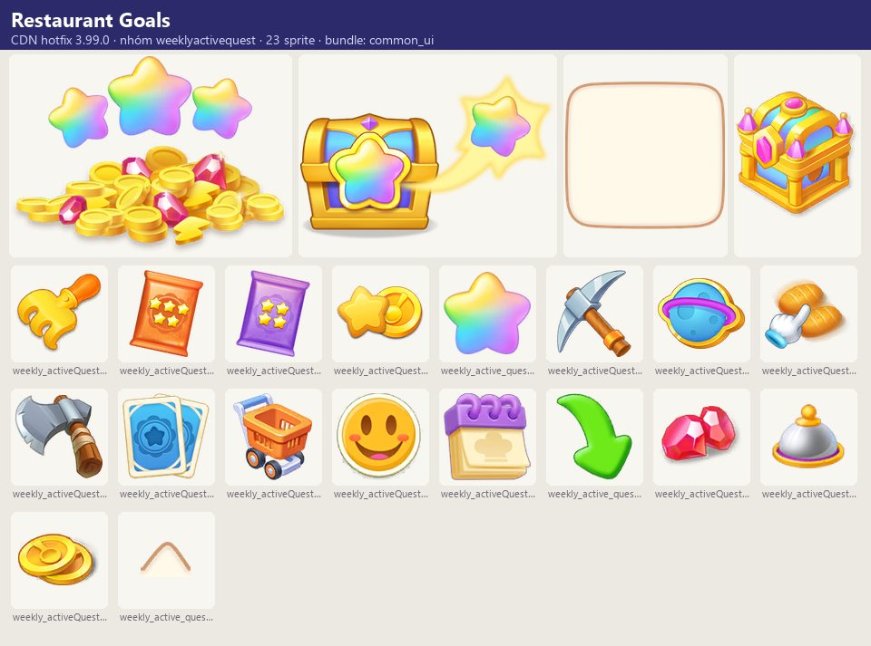
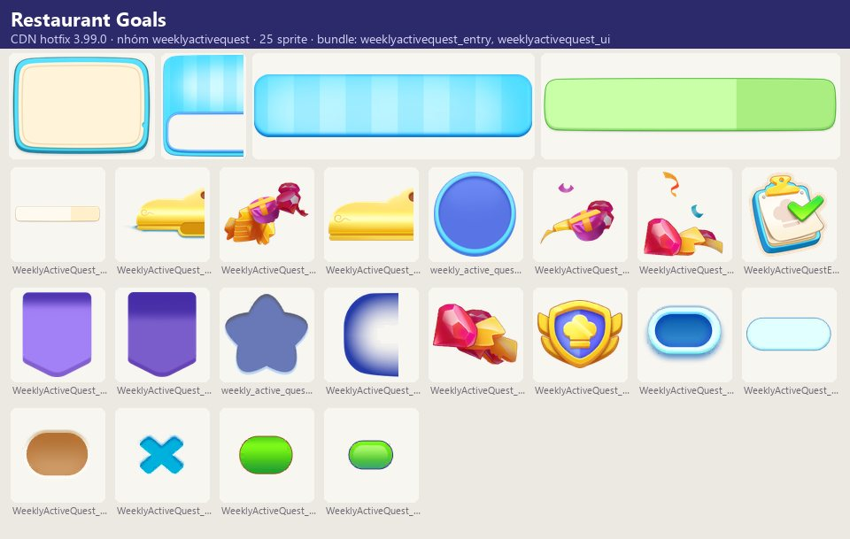
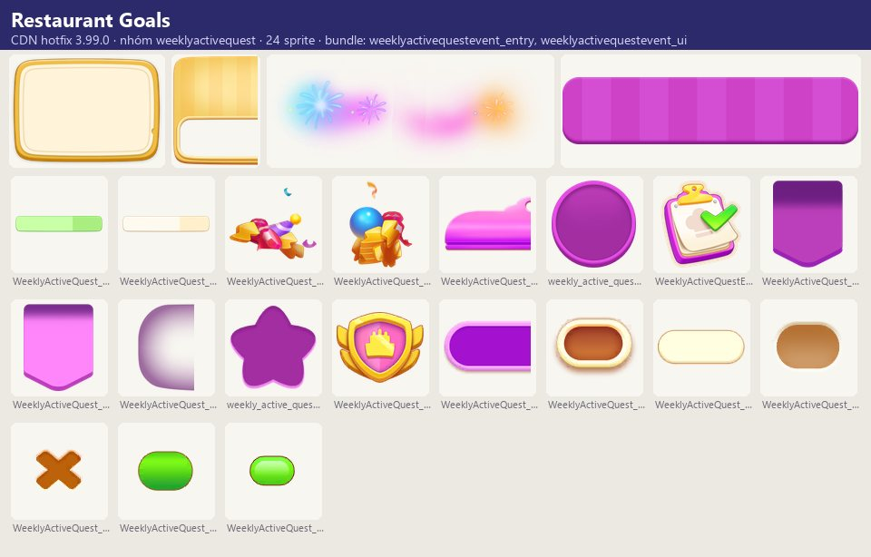
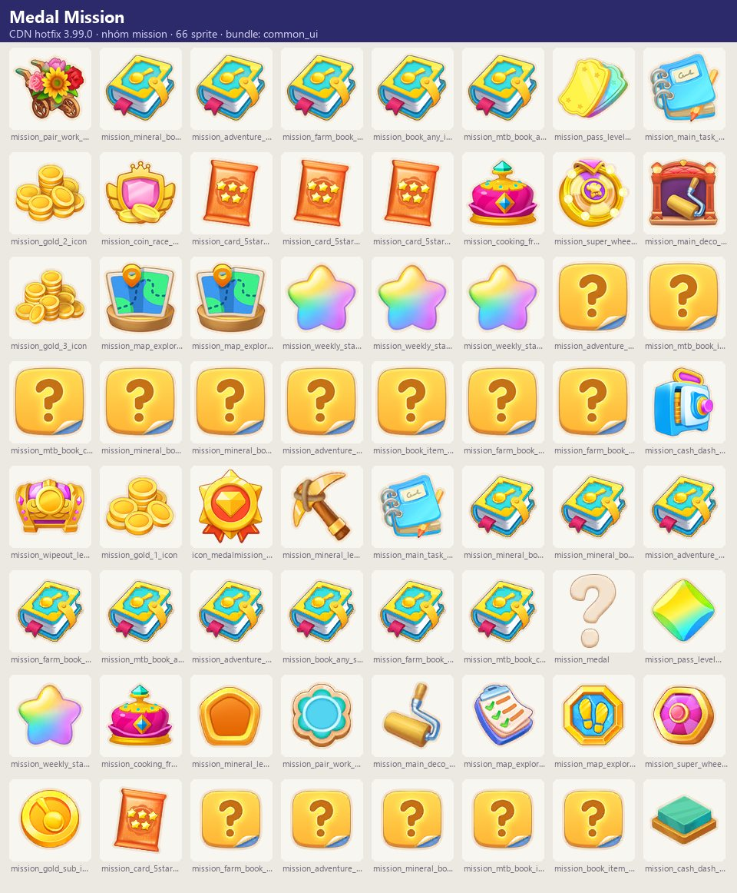
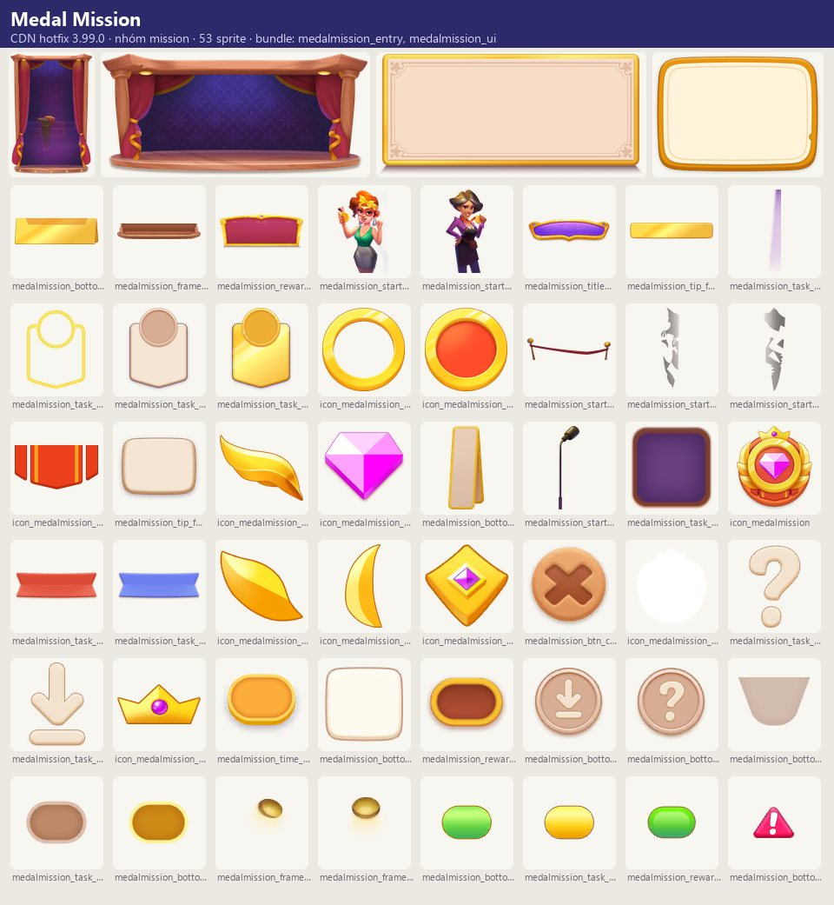
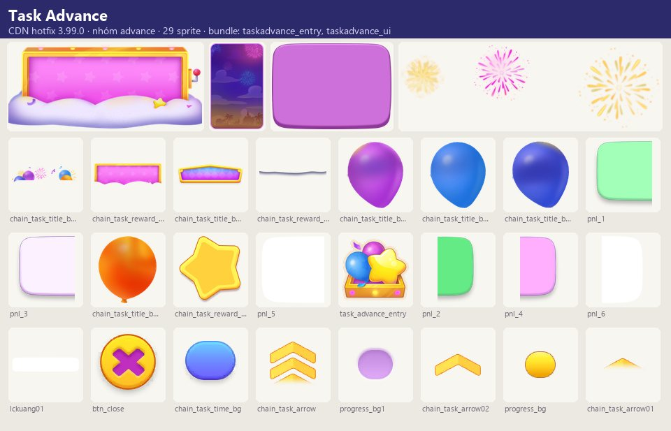
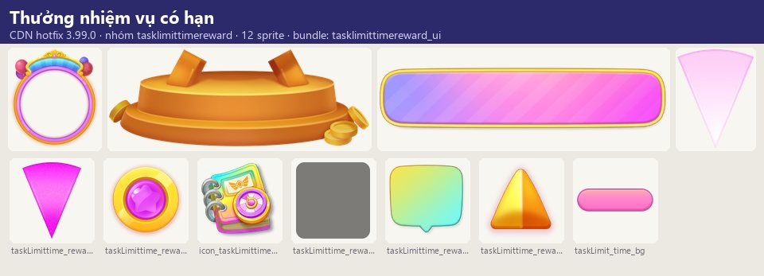

Tài nguyên hình ảnh
Lớp nhiệm vụ lặp lại giữ nhịp chơi hằng ngày: (1) Kitchen Rush — danh sách việc trong ngày (dùng năng lượng, tiêu gem, thu coin, phục vụ khách) có tiêu đề…
Mô tả
- Lớp nhiệm vụ lặp lại giữ nhịp chơi hằng ngày: (1) Kitchen Rush — danh sách việc trong ngày (dùng năng lượng, tiêu gem, thu coin, phục vụ khách) có tiêu đề thay đổi theo nhân vật; (2) Drifting Bottles — mỗi ngày nhặt chai thư có câu trích dẫn và thưởng phụ; (3) Restaurant Goals — nhiệm vụ tuần chia theo ngày, tích điểm hoạt động (icon_active) để nhận các mốc thưởng; hoàn thành mốc cuối nhận sao, đủ 3 sao nhận giải lớn, không đạt bị mất sao; (4) Medal Mission — chuỗi thử thách lớn đổi huy chương; (5) Task Advance — tiến trình nhiệm vụ nâng cao.
Còn thiếu / chưa xác minh
Mở khóa & điểm vào
Restaurant Goals: theo level (preview_title_weeklyaq); task theo ngày khóa tới khi đạt 'day {0}'. Kitchen Rush có tutorial riêng.
Điểm vào:
- Bong bóng trên bảng (WeeklyActiveQuestBoardBubble, …2)
- MedalMissionHudEntry
- TaskAdvanceBoardEntry
- Chai thư trên bản đồ
Cách hoạt động
- Kitchen Rush: mỗi ngày một danh sách nhiệm vụ (Use Energy / Spend Gems / Collect Coins / Serve Customers); hoàn thành từng việc nhận thưởng, xong tất cả hiện 'All Tasks Completed!'.
- Drifting Bottles: chạm chai → thông điệp ('Message in the Bottle', 61 câu bottle_text_*) và có thể 'Extra Reward Found'; hẹn ngày mai.
- Restaurant Goals: tuần chia theo Day, mỗi ngày mở nhóm nhiệm vụ (spend gems, IAP, login, thẻ 4/5 sao, good reviews, orders, coins, merges, event tokens, cards, dùng công cụ sự kiện đào/nông trại, đập khối); mỗi nhiệm vụ cho điểm hoạt động; điểm đạt mốc mở thưởng; nhận thưởng mốc cuối được 1 sao; đủ 3 sao nhận giải lớn; nếu tuần sau không đủ thì mất 1 sao ('Falling Star!').
- Phần thưởng quên nhận được giữ lại (RewardRecoverWindow).
- Medal Mission: chuỗi thử thách lớn có hạn, cần đúng phiên bản app ('Update Required'), hoàn thành nhận huy chương và thưởng.
Luồng chi tiết theo code
Kitchen Rush: mỗi ngày một danh sách nhiệm vụ (Use Energy / Spend Gems / Collect Coins / Serve Customers); hoàn thành từng việc nhận thưởng, xong tất cả hiện 'All Tasks Completed!'. Drifting Bottles: chạm chai → thông điệp ('Message in the Bottle', 61 câu bottle_text_*) và có thể 'Extra Reward Found'; hẹn ngày mai. Restaurant Goals: tuần chia theo Day, mỗi ngày mở nhóm nhiệm vụ (spend gems, IAP, login, thẻ 4/5 sao, good reviews, orders, coins, merges, event tokens, cards, dùng công cụ sự kiện đào/nông trại, đập khối); mỗi nhiệm vụ cho điểm hoạt động; điểm đạt mốc mở thưởng; nhận thưởng mốc cuối được 1 sao; đủ 3 sao nhận giải lớn; nếu tuần sau không đủ thì mất 1 sao ('Falling Star!'). Phần thưởng quên nhận được giữ lại (RewardRecoverWindow). Medal Mission: chuỗi thử thách lớn có hạn, cần đúng phiên bản app ('Update Required'), hoàn thành nhận huy chương và thưởng.
Tài nguyên hình ảnh (7)
7 bảng sprite trích từ bundle sự kiện trên CDN hotfix 3.99.0 (mỗi bảng là một chủ đề/biến thể; sprite rời, không phải màn hình đã dựng). Bấm ảnh để phóng to; nhãn UC dẫn tới use case tương ứng.














Số liệu chính
| Chỉ số | Giá trị | Nguồn |
|---|---|---|
| Ngưỡng sao | 3 sao → giải lớn | Ngưỡng sao — weekly_active_quest_star_instru_2 |
| Skin/biến thể có bundle trên CDN; server chọn skin nào chạy | 1: Taskadvance | Biến thể chủ đề — nhóm advance — facts/runtime/decoded/cdn_themes.json |
| Skin/biến thể có bundle trên CDN; server chọn skin nào chạy | 1: Medalmission | Biến thể chủ đề — nhóm mission — facts/runtime/decoded/cdn_themes.json |
| Skin/biến thể có bundle trên CDN; server chọn skin nào chạy | 1: Weeklyactivequestevent | Biến thể chủ đề — nhóm weeklyactivequest — facts/runtime/decoded/cdn_themes.json |
Use case (7)
Bấm vào từng use case để mở. Mở/đóng tất cả
UC-01 Kitchen Rush hằng ngày
Các bước- Xem việc trong ngày
- Hoàn thành từng việc
- Nhận thưởng
| Actor | Player |
|---|---|
| Trigger | Mở danh sách việc |
| Điều kiện | — |
| Kết quả | Thưởng ngày |
| Quy tắc / số liệu | Loại: energy, gem, gold, order; tiêu đề theo nhân vật (Getaway Challenge – Amala, Snacktime Quest – Coconut, Botanical Trials – Dominic, Angler's Quest – Harrison, Trickster Trials – Lori, Lookout Challenge – Norman, Fixer Challenge – Sam, Rockstar Trials – Sam band, Superstar Trials – Ziva) |
| Evidence | text daily_task_* |
UC-02 Chai thư trôi dạt
Các bước- Tap to open the bottle
- Đọc thông điệp
- Collect thưởng / thưởng thêm
| Actor | Player |
|---|---|
| Trigger | Chai xuất hiện mỗi ngày |
| Điều kiện | — |
| Kết quả | Thưởng nhỏ hằng ngày |
| Quy tắc / số liệu | Hẹn ngày mai |
| Evidence | text daily_check_bottle_*, bottle_text_normal_* (61) |
UC-03 Restaurant Goals
Các bước- Mở MainWindow
- Làm nhiệm vụ theo ngày
- Tích điểm hoạt động
- Nhận mốc thưởng
| Actor | Player |
|---|---|
| Trigger | Tuần mới |
| Điều kiện | Đủ level |
| Kết quả | Thưởng mốc |
| Quy tắc / số liệu | Nhiệm vụ ngày sau khóa: 'Reach day {0}'; mọi gem tiêu đều tính; mỗi IAP tính 1 lần |
| Evidence | text weekly_active_quest_*; prefab WeeklyActiveQuestMainWindow(2) |
UC-04 Sao Restaurant Goals
Các bước- Nhận mốc cuối → +1 sao
- Đủ 3 sao → giải lớn (StarRewardWindow)
- Không đạt tuần sau → mất 1 sao (StarLoseWindow)
| Actor | System |
|---|---|
| Trigger | Nhận/không nhận mốc cuối tuần |
| Điều kiện | — |
| Kết quả | Vòng giữ chân dài hạn |
| Quy tắc / số liệu | 3 sao = grand prize |
| Evidence | text weekly_active_quest_star_*; prefab WeeklyActiveQuestStarRewardWindow, WeeklyActiveQuestStarLoseWindow |
UC-05 Trả thưởng chưa nhận
Các bước- RewardRecoverWindow 'Unclaimed Rewards'
| Actor | System |
|---|---|
| Trigger | Hết tuần còn thưởng |
| Điều kiện | — |
| Kết quả | Nhận lại |
| Quy tắc / số liệu | — |
| Evidence | text weekly_active_quest_reward_recovery_* |
UC-06 Medal Mission
Các bước- ReadyWindow
- Hoàn thành thử thách lớn
- Nhận huy chương/thưởng
| Actor | Player |
|---|---|
| Trigger | Thử thách mở |
| Điều kiện | Đúng phiên bản app |
| Kết quả | Thưởng đặc biệt |
| Quy tắc / số liệu | Hết hạn: 'Expired'; thiếu dữ liệu: 'This event is missing' |
| Evidence | text mission_*; prefab MedalMission* |
Cấu hình (5)
Gộp mọi nguồn: const trong code, JSON mặc định trong Resources, bảng static, storage key, AB test, cờ server.
| Nguồn | Key | Kiểu | Giá trị | Ý nghĩa | Nơi định nghĩa |
|---|---|---|---|---|---|
| asset | Loại nhiệm vụ Restaurant Goals | enum | gem, pay, login, card_4star, card_5star, smile, order, gold, merge, deco, card, mineral, search, farm | game_text weekly_active_quest_* | |
| asset | Ngưỡng sao | int | 3 sao → giải lớn | weekly_active_quest_star_instru_2 | |
| CDN hotfix 3.99.0 (catalog Addressables + bundle) | Biến thể chủ đề — nhóm advance | list | 1: Taskadvance | Skin/biến thể có bundle trên CDN; server chọn skin nào chạy | facts/runtime/decoded/cdn_themes.json |
| CDN hotfix 3.99.0 (catalog Addressables + bundle) | Biến thể chủ đề — nhóm mission | list | 1: Medalmission | Skin/biến thể có bundle trên CDN; server chọn skin nào chạy | facts/runtime/decoded/cdn_themes.json |
| CDN hotfix 3.99.0 (catalog Addressables + bundle) | Biến thể chủ đề — nhóm weeklyactivequest | list | 1: Weeklyactivequestevent | Skin/biến thể có bundle trên CDN; server chọn skin nào chạy | facts/runtime/decoded/cdn_themes.json |
Giao diện (UI)
| Element | Class | Mục đích |
|---|---|---|
| Restaurant Goals | WeeklyActiveQuest/* | |
| Medal Mission | MissionActivity/MedalMission_prefab/* | |
| Task Advance | AdvanceActivity/TaskAdvance_prefab/* |
Storage keys
activity
Chưa đọc được / ghi chú
- Mục tiêu số lượng, điểm mỗi nhiệm vụ và thưởng mốc do server
Tính năng liên quan
Battle Pass (Season Pass) Điểm danh, Streak & buff đăng nhập Đơn hàng & khách Album thẻ (Card Collection) Khung sự kiện chung
Nguồn đã đọc
- notes/packs/DailyWeekly.md
- facts/runtime/cdn_png/index.json + screens/cdn_shots.json (bundle sự kiện CDN)